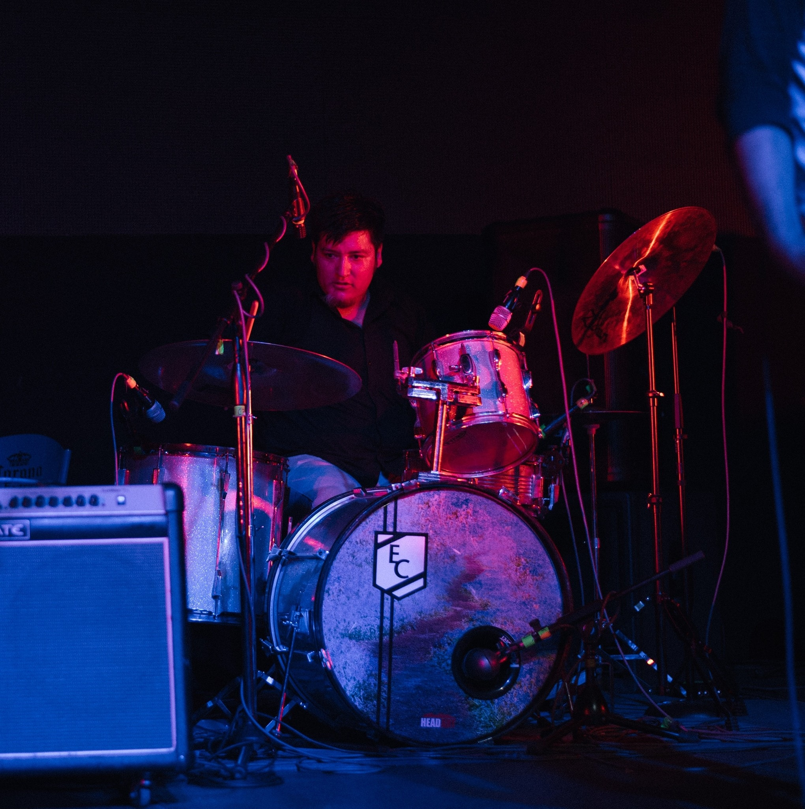

Venus in Bloom nace como un proyecto de rock experimental independiente en el Otoño del 2017 con el objetivo de ser una presencia disruptiva en la escena local, con influencias que van desde el garage rock de principios del milenio hasta la música rock japonesa contemporánea, con un concepto surrealista espacial añadiendo tintes de animación y caricatura cargada de sensualidad.
"S" - Guitarra
Melómano,tabaco. "S" es producto de una vida de adoración al arte de la guitarra. Influenciado por los grandes maestros del instrumento, "S" encontró un equilibrio en su ideal artístico en las raíces de la música tradicional mexicana. El Shoegaze es crucial, el Visual Kei una metáfora.
Abraham - Bajo

Comienza su trayecto musical desde la corta edad de catorce años, trabajando con instrumentos de cuerdas como guitarra, violín y actualmente bajo eléctrico, su fuerte está en la precisión a la hora de ejecutar y su perfeccionismo a la hora de componer, cada que sus dedos tocan su instrumento la fuerza de su bajeo se puede sentir en el cuerpo de la audiencia.
Leonel - Voz
Nacido en el árido norte del país y criado en el corazón de la perla tapatía, Leo es un cantante versátil que a pesar de no contar con una educación musical formal logra un rango vocal que va desde graves profundos hasta agudos muy elevados matizados con un timbre peculiarmente característico.
Oswaldo - Bateria
Su trayecto comienza en 2010, interesado en múltiples instrumentos, sufre de un flechazo de amor a primera vista al encontrar una batería en un salón de clases y ahí renace como percusionista, su fortaleza se encuentra en la potencia de sus golpes y la consistencia de su estilo, cada ataque a sus percusiones va cargado de agresividad y energía inyectando potencia a cada canción que interpreta.